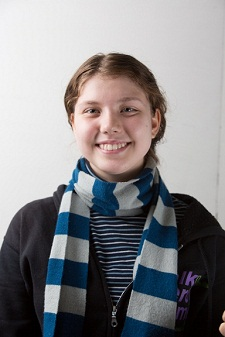
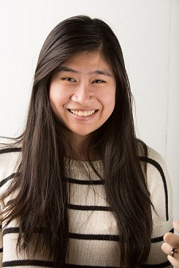
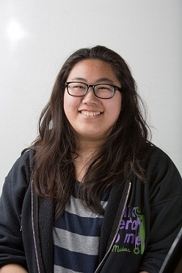
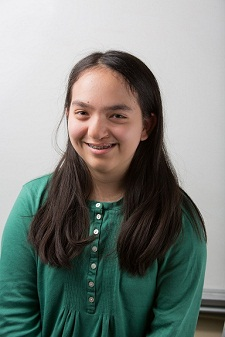
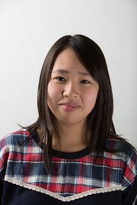
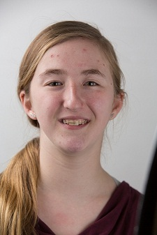
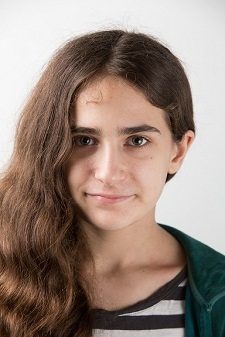
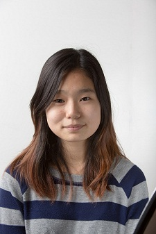

Construction
The Construction Department is responsible for actually building the robot for competitions. This department works closely together in order to design, plan and create the robot. Starting with raw materials, the construction department has to machine all the parts before putting them together to get a functioning robot. Construction is an essential part of robotics and these lovely ladies do an exemplary job of building the team’s robot.
Members
|  |
Madeleine is a member of the construction department of the FeMaidens. She enjoys designing and building little gadgets and hopes to pursue a career in structural engineering. This is her third year on the team, and has enjoyed the new and didactic experiences which come with each year. Her other hobbies include drawing and studying art history. She is excited to see the robot completed and ready to compete. |
|  |
Xiayuan has been on the robotics team for four years now and it has made her realize how fun constructing/building something is. Using all the tools available and working with others to accomplish something truly was a different experience for her. Robotics inspired her to take part in many engineering-related extracurricular activities and those were lots of fun as well. At home she loves listening to music while doing her homework, because it takes her away from everything that's going on. |
|
This is Joana's fourth year in the construction department. She joined Robotics in order to learn the process of building a robot and to be able to meet new people. Being on the team helped her learn numerous things and construction tools. She also has been able to meet a lot of new and different people. She feels united with everyone and she is able to enjoy new experiences. |
|
|  |
Grace has been part of the FeMaidens for 3 years already and she hopes to continue to do so until she graduates. She loves working with tools in the shop and helping the other departments when necessary. She loves music, engineering, and catching up on sleep when she finally has the time to do so. |
|  |
Sarah has been in construction from freshman year. She loves working in the shop. In the little spare time she has, she loves to read, blog and play random games. Sarah is one of the project managers of the Construction Department. |
|  |
Sabrina has been on the team for three years and enjoys every moment of the experience. She is one of the project managers of the Construction Department. Robotics has given her many opportunities to learn more about technology and engineering. She loves to listen to music and is always excited to taste food from different cultures. |
|  |
Iris is a junior in the Construction department of the FeMaidens. She enjoys reading, acting, science, and engineering. This is Iris' second year in FIRST robotics and she enjoys the camaraderie of the team. She is very excited for the competition. |
|  |
Juliette is a member of the construction department of the FeMaidens. It is her second year on the team and she plans to stay on for the rest of her high school career. She enjoys watching Doctor Who and playing with her dog. She is interested in medicinal sciences and engineering.She look forward to watching the robot come to life at the competition. She hopes that the knowledge and friendship she gains throughout this experience will last her a lifetime. |

|
Nuzhat is a member of the construction department of the FeMaidens. She works at the shop. This is Nuzhat's second year in FIRST Robotics. Nuzhat likes EXO. |
|
This is Christina's second year of high school, as well as her second year on this team. She is in the construction department and she has met a lot of great people she can look up to, as role models and as friends. It's been an interesting learning experience for her so far, and she looks forward to participating in other aspects of being in the team. |
|
|
|
Celine is a member of the construction department of the FeMaidens, the all-girls Robotics team at Bronx High School of Science. She likes to work with different tools and thinks it's really cool and is proud to be part of making such complex robots. She has two younger sisters, a current seventh grader and a two-and-a-half year old toddler, whom she likes to play with when she has the time. In her free time she also loves to watch movies with friends and family, bake cookies and other sweets, play the piano, and enjoy the sacred deliciousness of all good foods. She's a sophomore and this is her second year in FIRST Robotics and she's excited to experience her second FIRST Robotics competition. |
|  |
This is Eunah's second year in robotics and she absolutely enjoys it. She is in the construction department and she absolutely loves it because she gets to work hands on with the tools and machines of the shop. In her free time, she is just like any other girl and she likes to watch videos on YouTube nd listen to music. |